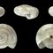

化学物質が必要な場合：より安全な選択とベストプラクティス
総合的病害虫・雑草管理（IPM）は非化学的防除を優先するが、重大な経済的・健康的・美的被害を防ぐためには、農薬の使用が必要となる場合もある。化学的防除が適切と判断された場合、より安全な製品を選択し、最善の手法に従うことで、人の健康、益虫、環境へのリスクを最小限に抑えることができる。本記事では、包括的なIPMプログラムの一環として、適切な農薬の選定、表示の理解、責任ある施用に関する指針を示す。

農薬が正当化される時
農薬が正当化される時
農薬は以下の場合にのみ検討すべきです：
- 防除基準を超過した場合： 害虫の個体数が設定された経済的、美的、または健康的な防除基準を超え、他の防除方法では不十分であることが証明された場合。
- 迅速な対応が必要な場合： 深刻な被害や健康リスク（例：病気を媒介する害虫、建物に被害を与える害虫）を防ぐために即時の対応が必要な場合。
- IPMプログラムの一部として： 予防、モニタリング、その他の防除方法を含む包括的なIPMプログラムの一構成要素として農薬が使用される場合。
- 選択的かつ標的を絞った場合： 農薬が標的害虫に対して選択的であり、非標的への影響を最小限に抑える標的指向的な方法で施用できる場合。

より安全な農薬の選択
農薬が必要な場合は、最も安全で効果的な選択肢を選びましょう:
- バイオリショナル農薬: これには植物由来の殺虫剤（ニーム、ピレトリン）、殺虫石鹸、園芸用オイル、微生物殺虫剤（バチルス・チューリンゲンシス、Bt）などが含まれます。これらは一般的に益虫への毒性が低く、環境中でより速く分解されます。
- 選択性のある製品: 益虫に害を及ぼす広範囲スペクトル剤ではなく、特定の害虫グループ（例：キャタピラー用のBtなど）を標的とする農薬を選びましょう。
- 低毒性評価: 農薬のラベルで毒性評価を確認してください。「注意」の製品は、「警告」や「危険」の製品よりも一般的に毒性が低いです。
- 浸透性農薬は避ける: 浸透性農薬（ネオニコチノイドなど）は植物に吸収され、組織内に残留する可能性があり、散布後長期間にわたって花粉媒介者や他の益虫に害を及ぼす可能性があります。
農薬散布のベストプラクティス
適切な使用はリスクを最小限に抑え、効果を最大限に高めます：
- ラベルを読み従う： 農薬のラベルには、安全かつ効果的な使用のための法的拘束力のある指示が記載されています。使用量、時期、安全上の注意事項など、すべての指示に従ってください。
- 時期： 害虫が最も脆弱な時（多くの場合、初期の成長段階）に、また益虫の活動が最も低い時（早朝や夕方）に農薬を散布してください。送粉者が活動している開花期の散布は避けてください。
- 標的を絞った散布： 全面散布ではなく、被害を受けた部分のみに散布してください。可能な場合は部分処理を使用してください。
- 気象条件： 風が強い条件（飛散リスク）や降雨が予想される時（効果低下、流出リスク）の散布は避けてください。
- 防護具： ラベルに指定されている適切な個人用防護具（PPE）を着用してください。
非標的影響の最小化
有益な昆虫と環境を保護する:
- 送粉者を保護: 開花植物への散布は避けてください。必要な場合は、花が閉じている時（早朝や夕方）や送粉者が活動していない時間帯に散布してください。
- 有益昆虫を保護: 選択性のある農薬を使用し、広範囲に効く製品は避けてください。有益昆虫が生存できる避難場所（未処理区域）を設けてください。
- 流出を防止: 過剰散布を避け、農薬が流出や飛散によって水源に到達するのを防いでください。
- 製品をローテーション: 異なる種類の農薬をローテーション使用し、耐性発達のリスクを低減してください。
フィールドノート：農薬代替案を優先
農薬を検討する前に、非化学的選択肢を徹底的に試すこと：手作業による除去、トラップ、障壁、生物的防除、および耕種的防除。農薬が必要な場合は、最も毒性の低い選択肢（石鹸、油剤、Bt剤）から始め、これらが不十分な場合にのみ段階的に強める。常に農薬使用を他の総合的病害虫管理（IPM）戦術と統合し、化学薬品のみに依存しないこと。
農薬が必要な場合、より安全な製品を選択し、最善の方法を実践することで、効果的な害虫駆除を図りつつリスクを最小限に抑えることができます。包括的な総合的病害虫・雑草管理（IPM）プログラムの一環として農薬を賢く使用することで、人間の健康、益虫、環境の質を守りながら、効果的に害虫を管理することが可能です。